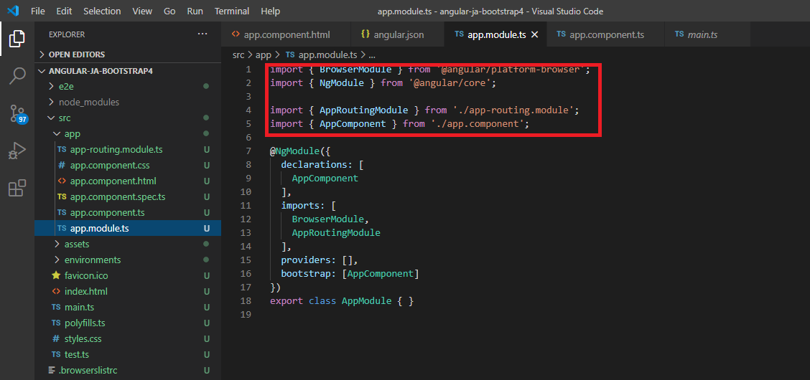
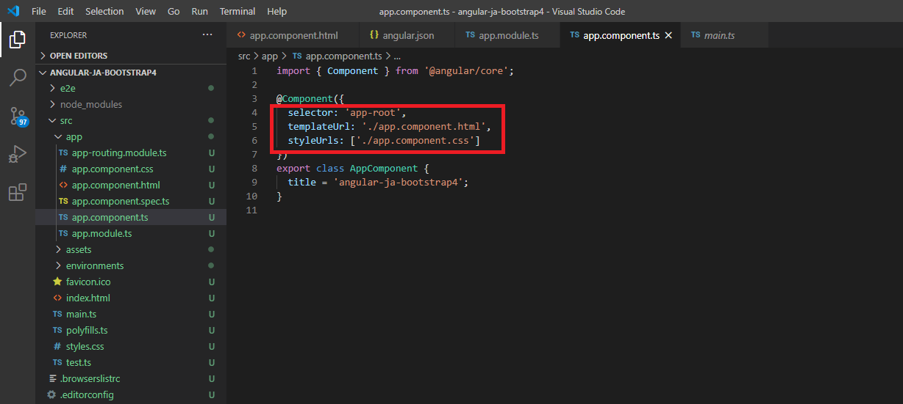

Angular ja Bootstrap4 projektin esitys
Esityksessä näytetään miten angular rakentaa selaimessa näkyvän sisällön, mikä ladataan ensin ja miten seuraava elementti kutsutaan.
-
Komponentit ovat Angularin tärkeimmät rakennusosat. Jokainen komponentti koostuu:
- HTML, joka julistaa sivun renderöinnit
- Typescript class, joka määrittelee käyttäytymisen/ defines behavior
- CSS-valitsin, joka määrittää komponentin käytön mallissa
- Vaihtoehtoisesti CSS-styles.
-
Riivi 11 näytää projektin main.ts-tiedosto ja sen Bootstrap-koodi joka käynnistää sovelluksen.
-
Kaikki komponentit ja modulit importoidaan app module.ts-tiedostoon, että Angular käyttää niitä.

-
Komponenttien määrittely.

-
Lisäämällä Angular.js:n tiedostoon rivi "node_modules/bootstrap/dist/css/bootstrap.min.css" otetaan Bootstrap 4 käyttöön projektissa.